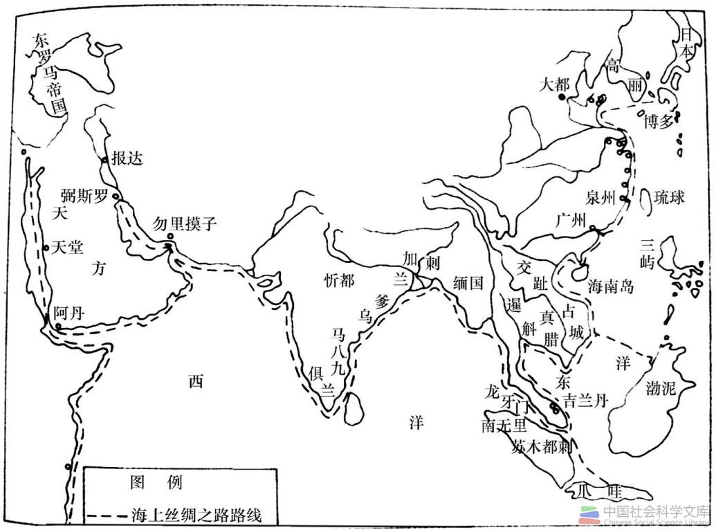

北宋时期，日本推行闭关锁国政策，中日航路上，日本海船几已销声匿迹，而中国对日民间航行却在政府赞助下十分活跃。 据统计，从978年至1116年间，有案可査的即有70次之务。不少中国舶商专门从事对日贸易，其中如朱仁聪、周文德、周文裔、陈文佑、孙忠、李充等人还迎来送往， 或献物送贡，或传递信息，成为当时东海航行的风云人物。
出自《广州千年商都文化的历史轨迹与传承创新》
1127年宋廷南渡初期因穷于应付对金和战，无力他顾，故宋船前往日本的记录甚少。但此后，由于对金达成和议，以及日本开始摒弃保守政策，双方的海上贸易便迅速复兴，并超过了北宋盛期。